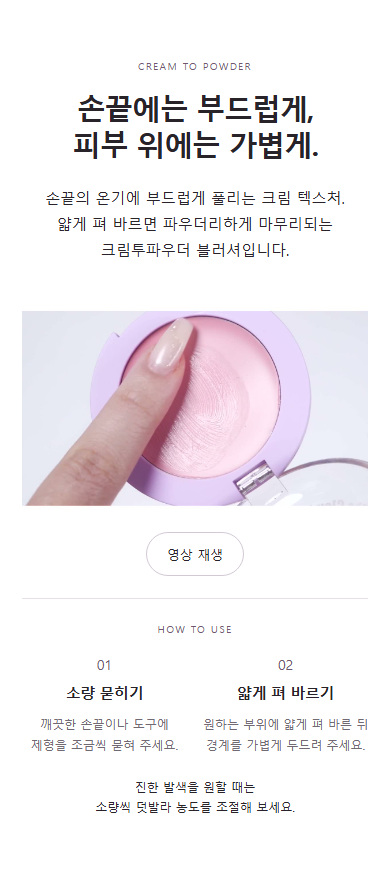
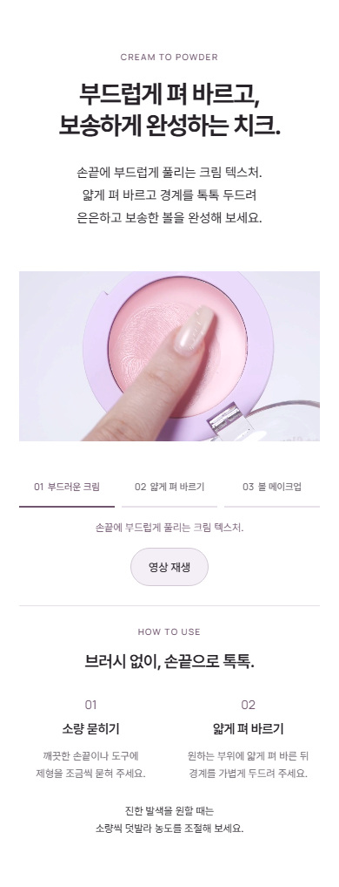
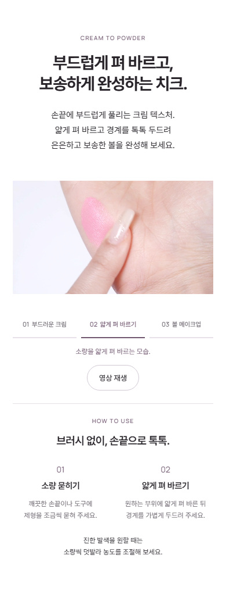
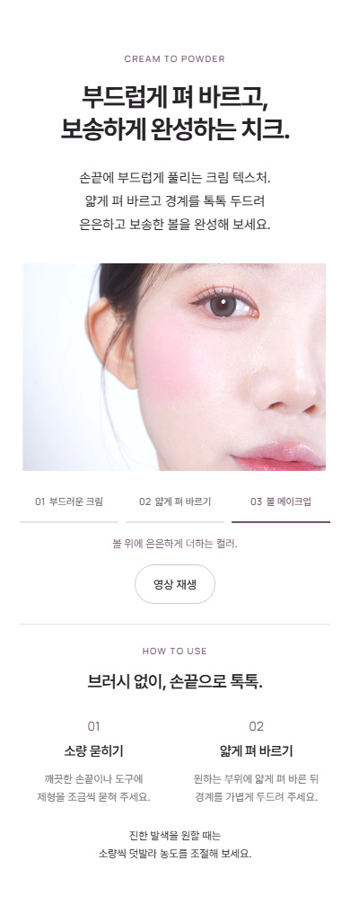

2026.10.19 · 제형 소구 반영본 · 최종 시각 검토용
부드러운 발림과 보송한 마무리를
사용 경험으로 연결했어.
검토한 문안을 제형 구간에 적용하고, 기존 영상에서 각 장면을 바로 볼 수 있게 했습니다. 모델 구간 없이 제품·제형·실제 발색으로 이어지는 구성은 유지했습니다.
부드럽게 펴 바르고,
보송하게 완성하는 치크.
문안과 제형 구간 전후 비교


같은 영상 안에서, 보고 싶은 장면으로
‘부드러운 크림 → 얇게 펴 바르기 → 볼 메이크업’ 세 장면을 선택하면 해당 위치에서 멈춰 자세히 볼 수 있습니다. 재생 중에는 장면에 맞춰 선택 표시와 설명이 바뀝니다.


비교 검토를 위해 같은 구간을 나란히 보여줍니다. 실제 상세에는 영상 한 개만 있으며, 위 사진들을 추가 삽입하지 않았습니다.
반영 근거와 표현 범위
탐뷰티 기존 멜팅 텍스처·Soft-Focus Blur 자료와 손가락·도구 사용법을 바탕으로, 바르는 과정과 완성되는 볼 표현을 연결했습니다. ‘브러시 없이, 손끝으로 톡톡’은 공식 손가락 사용법을 소비자의 편의로 풀어낸 문안입니다.
소구 방식 참고: e.l.f. Putty Blush의 가벼움·블렌딩·농도 조절 연결, 시세이도 WhippedPowder Blush의 제형 변화·발림성 연결. 타사 성능을 탐뷰티 성능 근거로 옮기지 않았습니다.
현재 영상은 여러 실제 촬영 장면을 연결한 구성입니다. 같은 피부·같은 호수·같은 조명의 연속 변화나 1회/2회 농도 비교는 실촬영 확보 후 추가할 항목으로 남겨두었습니다. 볼 장면은 보송함의 비교 시험으로 표시하지 않았습니다.
확인한 사항
320·390·600·860·1440px 화면, 세 장면 이동, 재생·정지, 설명 전환, 자동 움직임을 줄이는 설정을 확인했습니다. 자바스크립트가 꺼진 경우에도 기본 영상 컨트롤이 남습니다.
히어로·6색 발색·원료·마지막 제품·공식 정보와 영상 파일은 그대로입니다. 새로운 모델·발색 사진이나 반복 사진은 추가하지 않았습니다.
검토 근거: 변경 기록 · 화면·재생 확인 · 이전 모델 제거·원료 교체 검토. 기술 확인은 디자인 승인을 대신하지 않습니다.